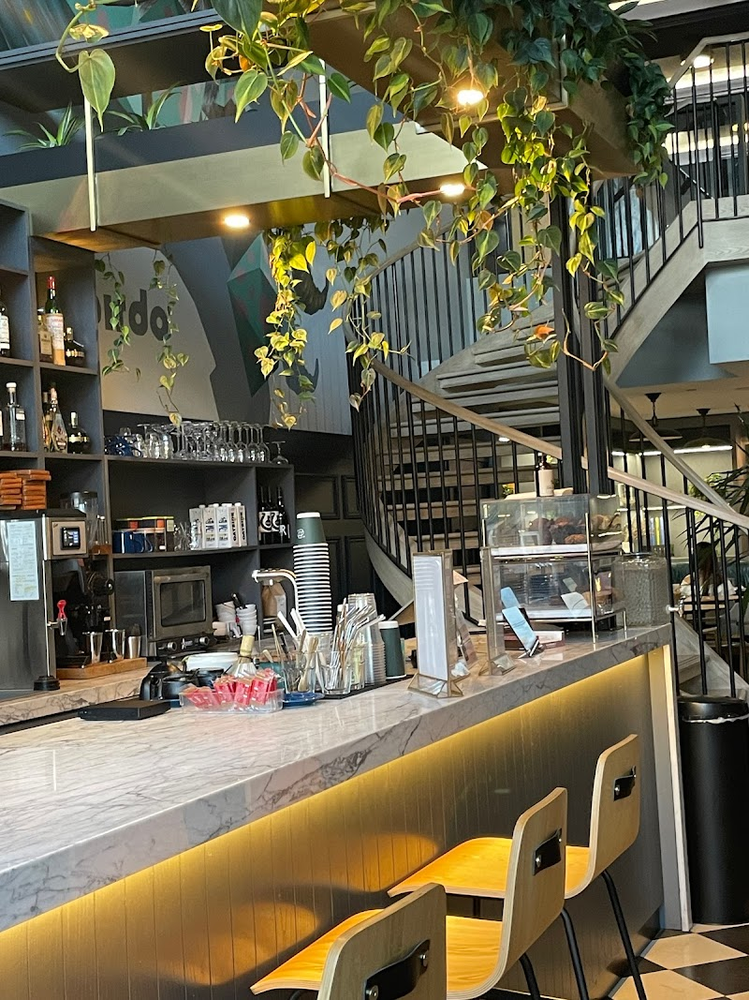
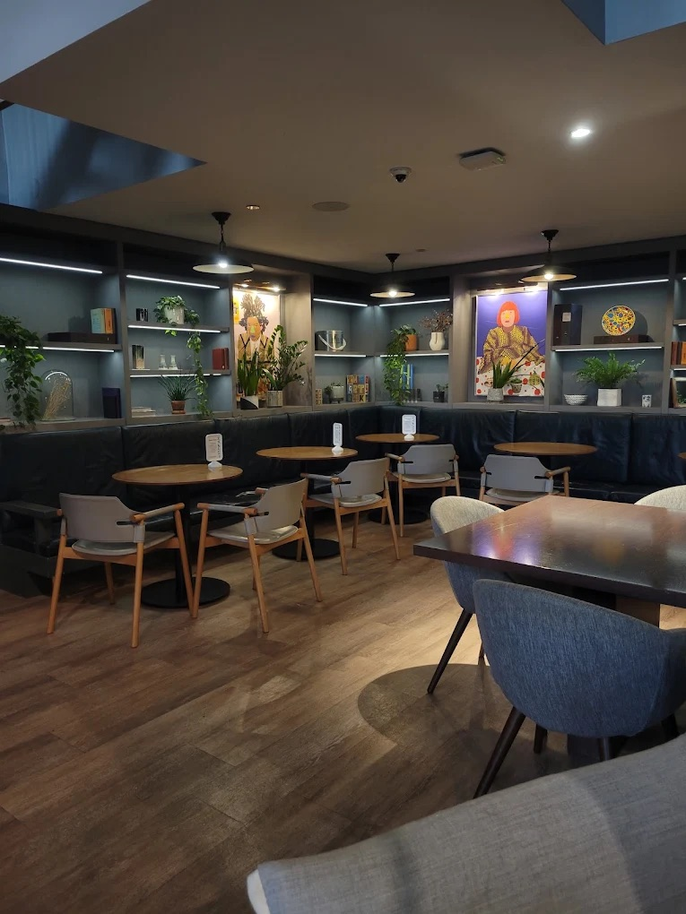
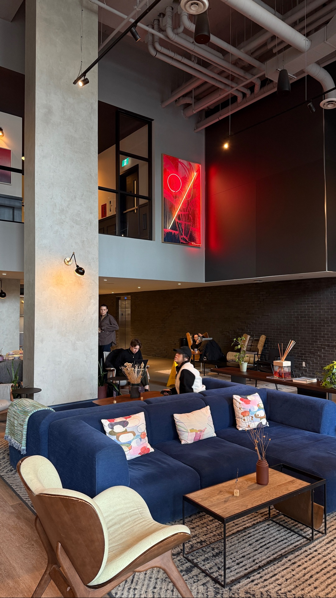

Overview
10 Dean is a clean and modern café known for its calm atmosphere and quieter environment. Compared to more popular and social cafés, it is less crowded and more relaxed, making it a great option for students looking for a peaceful place to study or work. It’s often considered an underrated spot for productivity.
Address
The Lobby Of The Waverley, Apartment Bldg, 484 Spadina Ave., Toronto, ON M5S 0E4
Hours
Sunday-Thursday: 7am-9pm, Friday-Saturday: 7am-10pm Usually less busy than other cafés and consistent and relaxed throughout the day because it’s not heavily crowded, it offers a more stable and reliable study environment.
Outlets
It is suitable for studying, though outlet availability may vary depending on where you sit.
Wifi
Wi-Fi available for customers.

Seatings
The seating setup is simple and functional, supporting individual or small group study sessions. Best suited for solo or 2 people studying.

Bar Seating
Short study session. Better for solo or duo studying.

Booth Seating
Long study session with with comfortable chairs.

Couch Seating
Comfortable seating but not best for studying.
Food & Drinks
Info
10 Dean offers a simple and straightforward menu focused on essentials. While the selection is not extensive, it provides everything needed for a comfortable study session.
- Coffee and espresso-based drinks (lattes, cappuccinos, americanos)
- Light pastries and baked goods
Atmosphere
Ambiance
The café has a clean, modern, and calming design, creating a relaxed and distraction-free environment. The vibe of the place helps you focus and be productive, making it ideal for studying.
- Simple and minimal interior
- Bright but not overwhelming
- Less crowded compared to other cafés
Quietness
Quiet and relaxed atmosphere and it’s better options for students who prefer a low-noise study environment.
- calmer than many other cafés
- Suitable for focused work
Music
Very soft or barely noticeable music and it maintains a peaceful atmosphere without becoming distracting.
Personal Comment
10 Dean is an underrated spot for quiet studying. The calm atmosphere and lower crowd levels make it easy to focus for longer periods, making it a great choice for students who prefer a more relaxed, calm and productive environment.